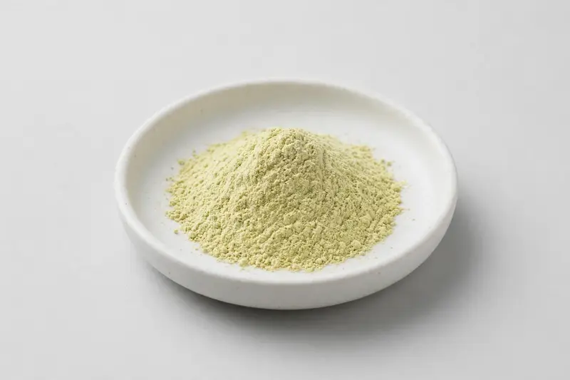

Camellia sinensis (white tea) — a young-leaf and bud tea extract supplied for premium beverage and antioxidant-positioned formulations, distinct from green tea extract.

Overview
White tea extract is produced from young leaves and buds of Camellia sinensis, harvested and minimally processed before drying, which preserves a lighter flavor and a naturally lower caffeine level than green tea. Buyers specify tea polyphenols as the primary marker. It is explicitly distinct from green tea extract — different leaf grade, different processing. As a Xi'an-based trading company sourcing through vetted partner producers, we confirm what the producer can hold against your target.
Specifications below reflect commonly requested options in the market — not a stock list. Share your target spec and we'll confirm exactly what we can supply, honestly.
| Specification | Details |
|---|---|
| Botanical identity | White tea (Camellia sinensis) young leaf and bud extract powder — not green tea extract |
| Marker compound | Tea polyphenols — commonly requested: 20-40% (UV); caffeine content stated separately on request |
| Appearance | Fine powder, color typical of the extract |
| Mesh size | Typically 80–100 mesh (confirm per inquiry) |
| Testing | COA/TDS arranged on request; scope agreed per your spec |
Applications
Documentation
We don't claim in-house labs or certifications we don't hold. COA and TDS documents can be arranged on request, and testing scope is agreed against your specification before supply.
FAQ
Related products
Passiflora incarnata
Key marker: Vitexin
View specs →Actaea racemosa
Key marker: Triterpene Glycosides
View specs →Urtica dioica
Key marker: Sterols
View specs →Nattokinase (fermented soybean enzyme)
Key marker: 20,000-40,000 FU/g
View specs →Spermidine (wheat germ-derived polyamine)
Key marker: 0.5-1% Spermidine
View specs →Send your target spec and volumes — we'll respond with a tailored quotation.
Request a Quote